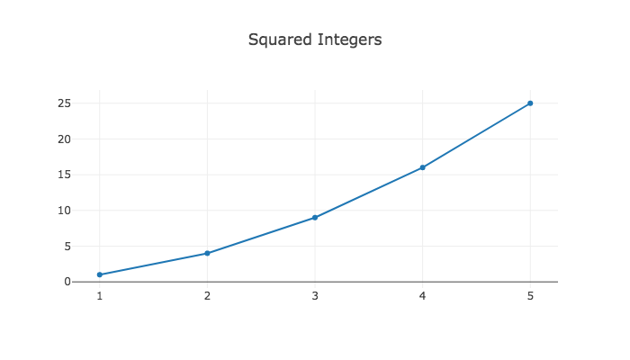
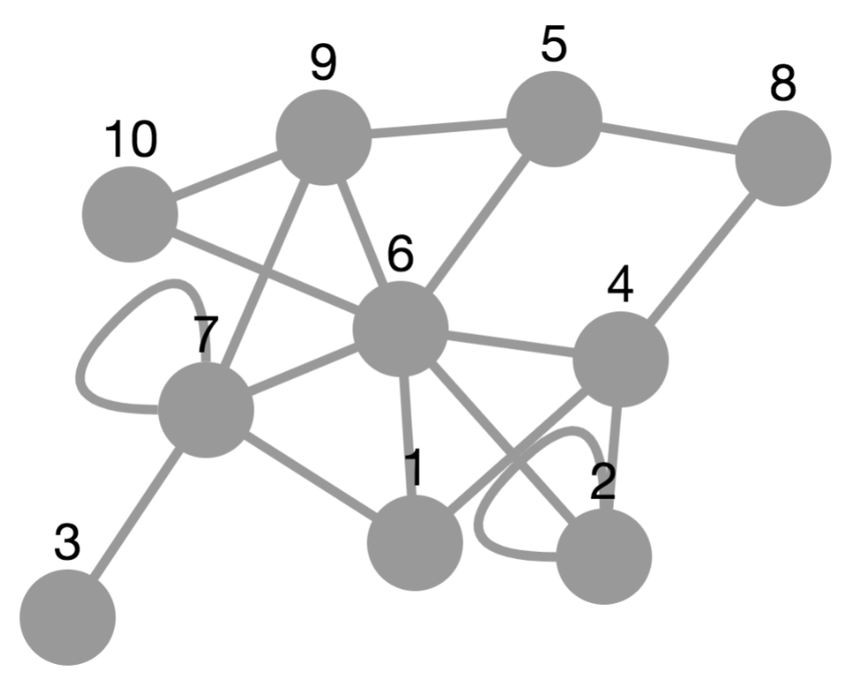

Since 2017, it has been possible to use GAP in Jupyter through the JupyterKernel package. Output was limited to the ordinary text output GAP produces; charts and graphs were not possible.
In 2018, Martins and Pfeiffer released francy (repository, article), which lets users create graphs of a few types (vertices and edges, line chart, bar chart, scatter chart) in a Jupyter notebook. It also allows the user to attach actions to the elements of these charts, which result in callbacks to GAP that can update the visualization.
This visualization package has different aims in three ways. First, it can function either in a Jupyter notebook or directly from the GAP REPL on the command line. Second, it aims to make a wider variety of visualizations accessible to GAP users. Third, it does not provide tools for conveniently making such visualizations interactive. Where the francy package excels at interactive visualizations, this package instead gives a broader scope of visualization tools and does not require Jupyter.
These goals are achieved by importing several existing JavaScript visualization toolkits and exposing them to GAP code, as described later in this manual.
There is an unfortunate ambiguity about the word "graph" in mathematics. It is used to mean both "the graph of a function drawn on coordinate axes" and "a collection of vertices with edges connecting them." This is particularly troublesome in a package like this one, where we will provide tools for drawing both of these things! Consequently, we remove the ambiguity as follows.
We will say "charts and plots" to refer to the first concept (lines, curves, bars, dots, etc. on coordinate axes) and "graphs" (or sometimes "graph drawing") to refer only to the second concept (vertices and edges). This convention holds throughout this entire document.
|  |  |
| A plot or chart | A graph |
To support both of these types of visualizations, this package imports a breadth of JavaScript visualization libraries (and you can extend it with more, as in Chapter 5). We split them into the categories defined above.
Native HTML canvas element
Plain HTML
This package exposes the JavaScript tools to the GAP user in two ways.
Foundationally, a low-level API gives direct access to the JSON passed to those tools and to JavaScript code for manipulating the visualizations the tools create. This is powerful but not convenient to use.
More conveniently, a high-level API gives two functions, one for creating plots and charts (Plot (7.1-1)) and one for creating graphs (PlotGraph (7.1-3)). The high-level API should handle the vast majority of use cases, but if an option you need is not supported by it, there is still the low-level API on which you can fall back.
To import this package, use the following GAP command from the command line or from a cell in a Jupyter notebook running a GAP kernel.
LoadPackage( "jupyterviz" );
To see how to use the package, we recommend next reading Chapter 2 on the high-level API, and if you find it necessary, also Chapter 3 on the low-level API. Each chapter contains numerous examples of how to use the package.
generated by GAPDoc2HTML